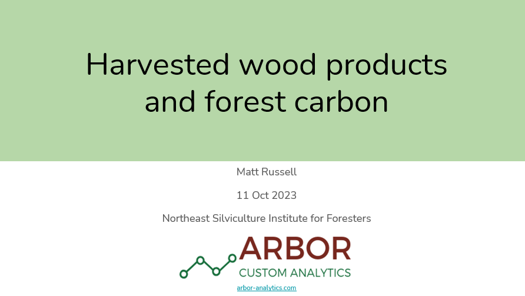

Harvested wood products store carbon from sustainably-managed forests. These slides were presented at the Northeast Silviculture Institute for Foresters in Gardner, MA on Oct. 11, 2023.
READ THE SLIDES.